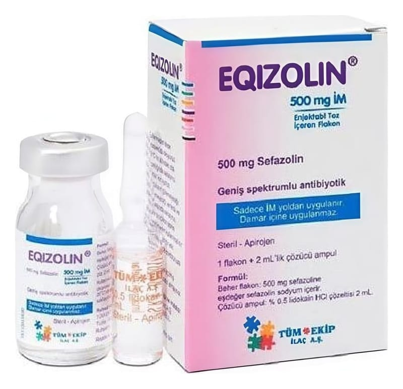

Eqizolin 500 mg IM Enjeksiyonluk Toz, 1 Adet

Ne için kullanılır
KT · Bölüm 1EQİZOLİN bir antibiyotiktir. Her flakon 500 mg sefazolin (sodyum olarak) içerir. 500 mg sefazolin (sodyum olarak) içeren 1 flakon ve 2 ml % 0,5 lidokain hidroklorür içeren 1 çözücü ampul bulunan ambalajlarda sunulmaktadır.
EQİZOLİN, duyarlı mikroorganizmaların yol açtığı aşağıdaki enfeksiyonların (iltihap oluşturan mikrobik hastalık) tedavisinde kullanılır:
• Solunum yolu enfeksiyonları
• İdrar yolu enfeksiyonları
• Deri ve yumuşak doku enfeksiyonları
• Safra yolu enfeksiyonları
• Kemik ve eklem enfeksiyonları
• Genital (cinsel organlar) enfeksiyonlar
• Septisemi (kanda bakteri bulunması)
• Endokardit (kalp zarının iltihabı)
• Perioperatif profilaksi (ameliyat öncesi koruma önlemleri için)